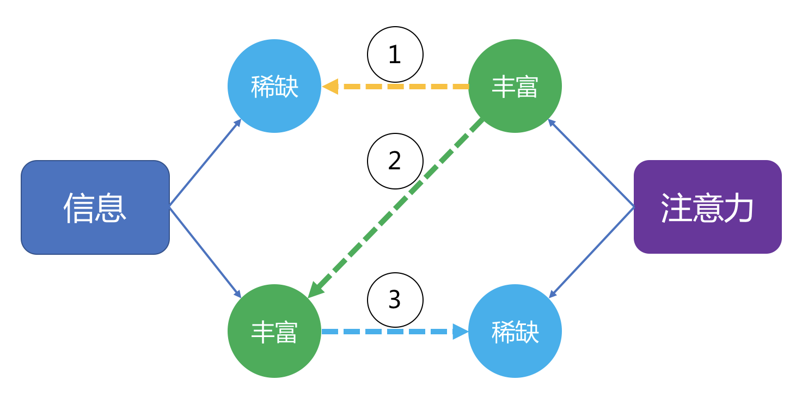

- 00 开篇词 用知识去对抗技术不平等.md.html
- 01 你真的需要个性化推荐系统吗_.md.html
- 02 个性化推荐系统有哪些绕不开的经典问题？.md.html
- 03 这些你必须应该具备的思维模式.md.html
- 04 画鬼容易画人难：用户画像的“能”和“不能”.md.html
- 05 从文本到用户画像有多远.md.html
- 06 超越标签的内容推荐系统.md.html
- 07 人以群分，你是什么人就看到什么世界.md.html
- 08 解密“看了又看”和“买了又买”.md.html
- 09 协同过滤中的相似度计算方法有哪些.md.html
- 10 那些在Netflix Prize中大放异彩的推荐算法.md.html
- 11 Facebook是怎么为十亿人互相推荐好友的.md.html
- 12 如果关注排序效果，那么这个模型可以帮到你.md.html
- 13 经典模型融合办法：线性模型和树模型的组合拳.md.html
- 14 一网打尽协同过滤、矩阵分解和线性模型.md.html
- 15 深度和宽度兼具的融合模型 Wide and Deep.md.html
- 16 简单却有效的Bandit算法.md.html
- 17 结合上下文信息的Bandit算法.md.html
- 18 如何将Bandit算法与协同过滤结合使用.md.html
- 19 深度学习在推荐系统中的应用有哪些_.md.html
- 20 用RNN构建个性化音乐播单.md.html
- 21 构建一个科学的排行榜体系.md.html
- 22 实用的加权采样算法.md.html
- 23 推荐候选池的去重策略.md.html
- 24 典型的信息流架构是什么样的.md.html
- 25 Netflix个性化推荐架构.md.html
- 26 总览推荐架构和搜索、广告的关系.md.html
- 27 巧妇难为无米之炊：数据采集关键要素.md.html
- 28 让你的推荐系统反应更快：实时推荐.md.html
- 29 让数据驱动落地，你需要一个实验平台.md.html
- 30 推荐系统服务化、存储选型及API设计.md.html
- 31 推荐系统的测试方法及常用指标介绍.md.html
- 32 道高一尺魔高一丈：推荐系统的攻防.md.html
- 33 和推荐系统有关的开源工具及框架介绍.md.html
- 34 推荐系统在互联网产品商业链条中的地位.md.html
- 35 说说信息流的前世今生.md.html
- 36 组建推荐团队及工程师的学习路径.md.html
- 加餐 推荐系统的参考阅读.md.html
- 结束语 遇“荐”之后，江湖再见.md.html
- 捐赠
34 推荐系统在互联网产品商业链条中的地位
今天我要和你探讨的是推荐系统在商业链条中的地位。
一个完整的推荐系统一定是置身商业世界中的，而不是只在学术界撒野，毕竟学术界大部分时间里只关注算法和模型的效果，并且是建立在强假设和非常有限的数据基础上的，显然这不并算是推荐系统的全貌。
在商业世界里，就应该带一点“功利”的眼光看待推荐系统，但功利地看待推荐系统之前，要认识到推荐系统在商业链条中到底是个什么样的角色和作用？
推荐系统的作用
商业社会中亘古不变的关系是供求关系，供求关系的背后是交换。无论是实体经济还是虚拟经济，都是基于这个原理。供求关系动态变化，当供给小于需求时，就产生了稀缺，有了稀缺，就有了商业。
我不是商人，所以我就只懂得基本原理，下面我就根据这个基本原理来说说推荐系统的角色和地位。
推荐系统处理的是信息，它的主要作用是在信息生产方和信息消费方搭建起桥梁。所以推荐系统是信息经济中的一个装置。那么在信息经济中供求到底又是什么呢？
信息经济中，看上去供求方是信息生产者，需求方是注意力提供者。这里似乎猝不及防地就引出了“注意力”这个词。
所以，无论推荐系统服务的是什么样的产品，这些产品属于资讯，社交，电商，游戏等不同的形式，它们最终得到真金白银的手段不一样，也就是所谓的商业模式各有不同，但是它们都有一个关键步骤就是：获得用户的注意力。
用户产生行为就是付出注意力的表现，也因此信息流产品都在看谁家的阅读时间长，那都是白花花的注意力啊。信息经济其实就是注意力经济，而推荐系统就是留住注意力的重要手段。
那么说注意力这种东西到底是什么？
它不是真的物理“力”，不属于四种宇宙基本力，而是一种决策可能性。比如用户为一个广告倾注了注意力，那么就有可能去点击广告，如果这个注意力非常强烈，还会继续消费广告中的商品，如果注意力足够持久，那么就会参与到整个链条上的各个经济活动。
注意力有个特点：总量有限。随着信息越来越丰富，注意力越来越稀缺。
首先，在门户时代，信息稀缺，注意力丰富，用户主动找信息。
其次，在搜索时代，信息已经丰富，但搜索的工具属性和使用场景单一，导致它并不会侵蚀用户的注意力，所以依然是用户主动找信息。
最后，在移动互联网普及之后，信息已经泛滥到很大程度，智能手机变成身体的一个器官，丰富的注意力被信息源以推荐的方式逐渐侵蚀，注意力从丰富变成稀缺。
但是，注意力本身有价值高低之分。资讯阅读类注意力量大，但是便宜，电商、游戏类注意力贵重，但数量上不如资讯阅读类。这个注意力价值，一般在行业里被粗略称呼为用户价值，实际上这应该是注意力价值。
综合看，三个时代的信息和注意力关系如下图所示。

在推荐系统的帮助下，注意力变成了稀缺方，信息源在打着灯笼到处寻找注意力，其实商品不再是信息，商品就是注意力，信息源变成了这些注意力的消费方。
有限的注意力在推荐系统的帮助下，聚到了平台上，平台方需要像电力一样把这些注意力储存起来，储存起来的注意力就是平台方最有价值的资产。
储存这些注意力的并不是电池板，而是产品，而推荐系统是一种注意力储存设备型号，这就是推荐系统在商业链条中的角色和地位。
如何定量地定义注意力？直观地看，注意力的存在会导致平台上内容被消耗。因此，我个人把注意力定义为：内容被消耗的加速度与平台内容复杂度的乘积。
写成公式就是：
\[ attention = A \\times C \]
是的， 你没看错，我就是类比了牛顿第二定律定义了注意力。我来解释一下这个公式。
C是内容复杂程度，因为不好量化，可以理解为内容被消耗光所需的时间，比如论文网站和鸡汤文网站，要读完两者，难度显然不同，表现为消耗时间不同，再比如，卖奢侈品电商网站和卖地摊货的电商网站，要买光所有商品，花费的钱需要时间去累积，也表现在消耗时间不同。
A是内容消耗的加速度，为什么是加速度，而不是速度呢？因为这里衡量的注意力并不只是内容消费者的注意力，还有内容创作者的注意力，是两者合并后的结果。如果用户的注意力和内容创作者倾注的注意力相同，就表现为每天消耗的内容数量一样，加速度为0，整个平台上没有多余的注意力剩下，没有多余的注意力剩下，就无法销售注意力。
内容消耗的加速度，还与参加消耗的用户数量有关，用户数量越多，每天消耗越多，用户数量指数增加，则消耗的加速度就不为0，平台方就有了多余的注意力。
上述是一个注意力定义框架，限于篇幅，这里不展开详细定义。但是可以针对这个注意力定义框架制定一些提升平台剩余注意力的策略，及负面影响。
- 内容创作适当少倾注注意力，这样的结果是，用户消耗会快，但难度也会减少，总注意力会受到制衡；
- 提升内容难度，这意味着创作者也要倾注更多注意力，有可能用户方消耗不了，加速度变成负数；
- 提高单用户消耗加速度，这就是推荐系统的作用，给用户推荐他更愿意消耗的内容；
- 提高用户数，或者说提高活跃用户数。
定义了注意力之后，就能看清楚推荐系统在提升平台注意力的作用，也就能看清楚推荐系统的价值。
推荐系统的成本
既然是商业，那么就会考虑成本，虽然只考虑成本是非常浅薄的商业思维；但是这不重要，如果你是公司或者团队负责人，想清楚你的成本，你就会掂量一下是不是要去把“个性化”或者“算法”的标签贴给自己的产品。
如果你是从业者，清楚成本你就会有危机感，你不会觉得老板不懂，所以就不把成本放在眼里，而是会时刻提醒自己，一切成本，他都是知道的，包括你本身。
这并非危言耸听，时代赐予的红利会消失，创造的价值覆盖了成本才能挺过来。
大致来说，打造一个推荐系统的成本分布在这几个地方：
- 团队成本；
- 硬件成本；
- 机会成本。
一、团队成本
团队成本包含团队组建的成本和团队维护的成本。一个推荐系统的团队至少要包含以下几类全职的人。
算法工程师，承担了数据科学家和程序员的双重工作，以数据科学为主，并兼具工程能力，在国外一般叫做机器学习工程师。团队里的这类人，由于市场长期供不应求，所以招募成本很高。比如要在各大招聘网站去投放广告，不断和人social混脸熟，高昂的猎头费用，转化率极低。招募这部分人，如果只是靠在朋友圈发个招聘文案，可以说是0可能会招到人。招募成本高，人员本身的成本也高，由于时代红利存在，整体薪资水平水涨船高，在无法真实分辨出每个人实际价值前，也只能付出这部分人才试错成本。
软件工程师，如果把推荐系统分为引擎和算法的话，那么软件工程师承担的责任比算法工程师更大，因为算法可以用一些开箱即用的开源工具暂时顶上去；而没有引擎，算法则就没有了用武之地。软件工程师由于市场存量高于算法工程师，所以招募时稍微好一点，但是请注意是好一点，实际上，要找到好的软件工程师，该付出的成本一个都不少。
团队成本占据了推荐系统成本的大头，老板们也容易在这一部分产生焦虑，不要这样的团队，生怕自己的产品被市场抛弃，维护这样一个团队呢，那真是“玩儿得特大”。
其实不只是推荐系统，对于技术团队，有一个错误的认识被无数前辈警醒过，那就是：短期高估，长期低估。
团队维护的成本除了实打实的薪资支出，还有文化建设成本。工程师们都号称需要宽容自由的环境，形式上看就像是花钱请了一群野马，这也是成本，或者说风险。
因为真正优秀的工程师才会在宽松环境下创造出远大于成本的价值，而普通工程师有可能在宽松自由的环境下逐渐废掉。
给团队维护一个宽松自由的环境，就需要有一些非常明确地验收工程师成果的机制，这种技术文化建设也不是一朝一夕的事情，需要付出很大的精力。
二、硬件成本
推荐系统是数据贪婪型。为了获得更多的数据，需要非常高配置的硬件支持，这是由于：
- 要存储更多的数据；
- 要更安全保存数据；
- 要更快响应用户，才能留住用户；
- 要更好的开发环境，才能提高工程师开发效率，要知道工程师的时间成本最高。
等等这些理由都告诉我们：推荐系统是数据贪婪型，而推荐系统工程师是硬件贪婪型。当然，幸运的是有摩尔定律，硬件成本在逐年下降，配置却在逐年提高，所以硬件成本比起团队成本，只是毛毛雨啦。
有了团队，不要在硬件上节省，节省的是非常有限的硬件成本，浪费的是非常昂贵的团队成本。
三、机会成本
这个就是非常玄学了，并且也不好评估，如果有平行时空存在，倒是可以给这个做个ABTest。
所谓机会成本就是：可能推荐系统并没有帮助产品创造什么价值，反而把很多资源投入在这上面，白白浪费了市场窗口期。
在信息流大火的今天，大家觉得个性化咨询阅读天然成立，然而仅仅在十年前，许多做个性化阅读的产品投入巨大，到今天可以说尸骨无存。如果当年他们不用推荐系统做，而是老老实实用人工编辑的方式做，也许有不一样的结果。这个就是机会成本。
直白地讲，机会成本就是那句毒鸡汤的正经说法：选择大于努力。
总结
今天，我带你换了一个角度去看待推荐系统的角色和作用，它是一台注意力存储机器，在注意力稀缺的今天，用投其所好的方式存储注意力，并将注意力作为商品与人交换产生价值，也就是广告、电商销售、其他增值服务。这些都是存储了注意力，并对存储的注意力进行了变现。
但是，你要认识到，存储注意力并非只有推荐系统一种机器，所以你们家要不要采购这台注意力存储机器呢？
那就需要再考虑一下成本了，如果存储的注意力价值远不及成本，想必你会采购这台注意力存储机器。这样就和专栏的开篇讲到，要不要上推荐系统的分析首尾呼应。
你能估算一下你熟悉的产品的注意力大小吗？你可以给我留言，我们一起讨论。
© 2019 - 2023 Liangliang Lee. Powered by gin and hexo-theme-book.